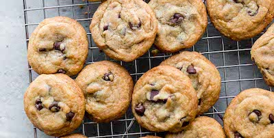

Chocolate Chip Cookies

Description
This recipe produces a nice thick bakery style cookie. Perfectly golden brown on the outside but still soft on the inside. The key to this is creaming the butter and sugar and chilling the dough. This recipes calls for a stand mixer but should work just fine without but might result in a flatter cookie and less yield from the dough.
Ingredients
- 3 cups of ap flour
- 1.25 cups of light brown sugar
- 1/2 cup of granulated sugar
- 1 cup semisweet chocolate chips
- 1 cup bittersweet chocolate chips
- 1 tsp baking soda
- 1 tsp salt
- 1 tsp nutmeg
- 1/2 tsp cinnamon
- 1 tbsp of vanilla paste or extract
- 14 tbsp of butter at room temp
- 2 large eggs at room temp
Steps
- In a bowl combine all the dry ingredients EXECPT the sugar.
- In a stand mixer using the paddle attachment combine the brown and white sugar and stir to combine.
- Cut your butter into chunks. With the stand mixer set to medium begin adding butter to sugar. Allow each piece of butter to incorporate fully before adding the next piece. Remember to stop and scrape down the bowl to avoid butter bombs!
- Once butter and sugar has creamed it should appear as a light brown aerated mixture. Stop the mixer and do another scrape of the paddle and bowl.
- On the stir/low settings add the eggs and vanilla to the butter and sugar mixture.
- Slowly incorporate dry ingredients into our sugary aerated butter. Remember to remain on the low setting so you don't punch the air out. If doing this by hand gently fold the dry ingredients into the butter. Stir until just combined and no dry streaks of flour can be seen in the dough.
- Remove bowl from stand mixer and using a spatula gently fold in the chocolate chips into the dough (To prevent chip sinkage lighly sprinkle some flour or corn starch onto chips to coat before adding them to the dough).
- Chill dough for at least an hour and up to twenty-four hours. This prevents the dough from spreading and a longer chill allows all those flavors to really get to know each other.
- Preheat oven to 350 F/176 C.
- Using a cookie or ice cream scoop dole out your dough to your respective cookie sheet. Give the cookies around an inch of space on all sides. This allows air to circulate and gives a more even bake.
- Bake for 12-15 minutes or until lightly golden.
- Allow to cool on cookie sheet for five minutes then move to cooling tray.
- Enjoy :)